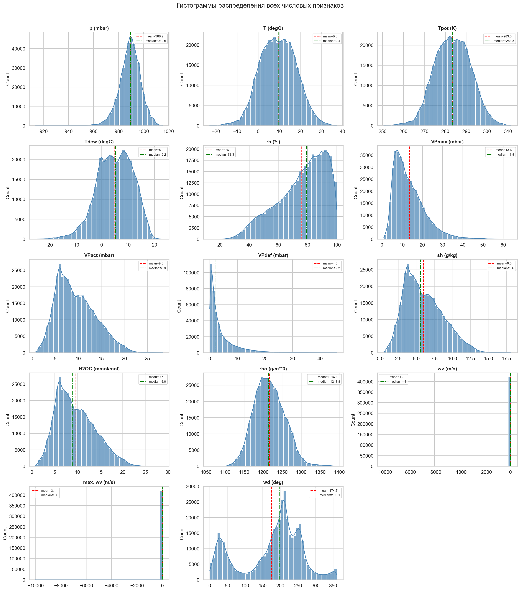
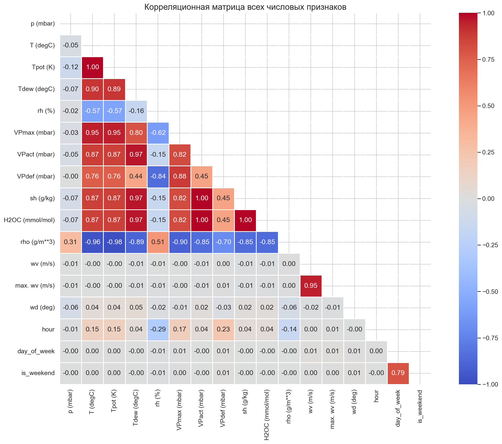
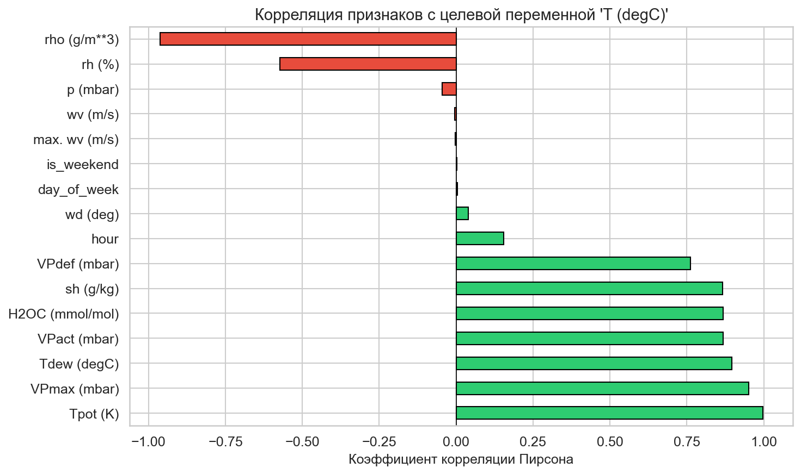
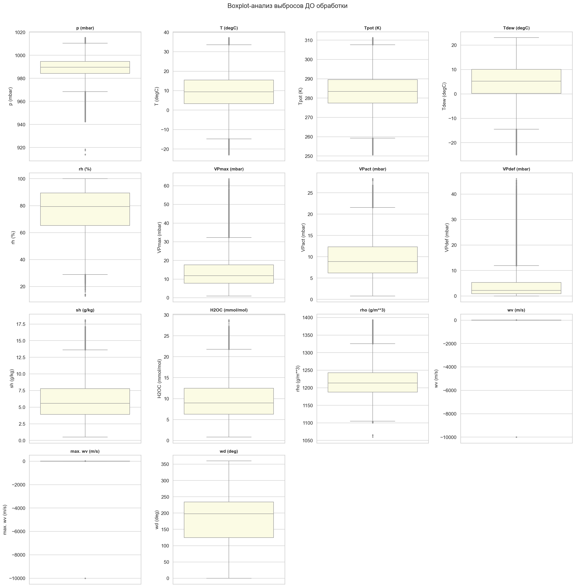
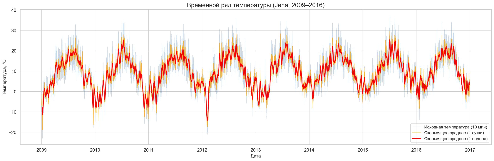
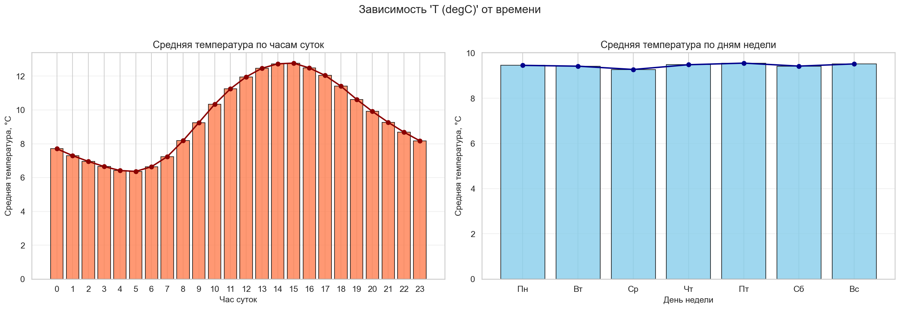
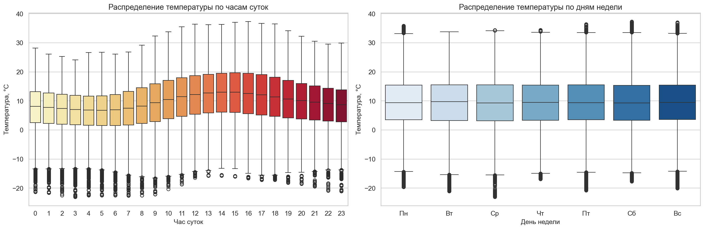

Assignment 1: Exploratory Data Analysis (EDA)
Comprehensive preparation of multi-dimensional meteorological data for time-series forecasting via Neural Networks.
The goal is to conduct an exploratory data analysis on the Jena Climate (2009–2016) dataset and meticulously prepare it for deep learning predictive modeling (RNN/LSTM).
The primary forecasting target for subsequent Neural Network tasks is T (degC) (Air Temperature).

We visually inspected all 14 variables to evaluate data scaling requirements.
The correlation matrix pinpoints multicollinearity among physical parameters.

Focusing purely on the predictive strength regarding T (degC).

Sorted correlations relative to the Target Output
Rigorous filtering is essential for stability in Neural Networks without compromising time-series continuity.
NaN..interpolate(method='time') to respect the
timestamp sequence elegantly.
Boxplots visually distinguishing extreme sensor spikes

Plotting the entire 8-year span corroborates data integrity and cyclic stability.
Extracting insights at the granular level supports creating better temporal features.


Variance validation showing stable medians over weekdays vs curved variance over hours
Pure raw states are suboptimal for sequence prediction. We mathematically embed historical context into each row so the model perceives momentum.
Given 10-minute intervals, 1 chronological hour evaluates to exactly 6 steps backwards.
| Feature Name | Meaning | Implementation |
|---|---|---|
lag_1 |
Temp 1 Hour prior | shift(6) |
lag_2 |
Temp 2 Hours prior | shift(12) |
lag_3 |
Temp 3 Hours prior | shift(18) |
Filters instantaneous noise (like a sudden gust of wind cooling a sensor globally).
| Feature Name | Window Space | Implementation |
|---|---|---|
roll_30m |
30 Minutes | rolling(3).mean() |
roll_60m |
60 Minutes | rolling(6).mean() |
roll_120m |
120 Minutes | rolling(12).mean() |
Note: The first 18 rows generated `NaN` due to missing history bounds. These 18 rows (representing 0.004% of total data) were safely dropped to prevent downstream ML poisoning.
Ensuring data formats map effortlessly into deep space learning spaces (TensorFlow/Keras architectures).
Extracted `hour` integers were mapped to abstract states ('Morning', 'Day', 'Evening', 'Night').
Activation functions like Sigmoid / Tanh saturate and gradient descent slows dramatically on non-standard numeric widths.
MinMaxScaler() to crush all absolute metrics strictly
inside [0, 1] boundaries.Defense Prepared & Ready For Questions